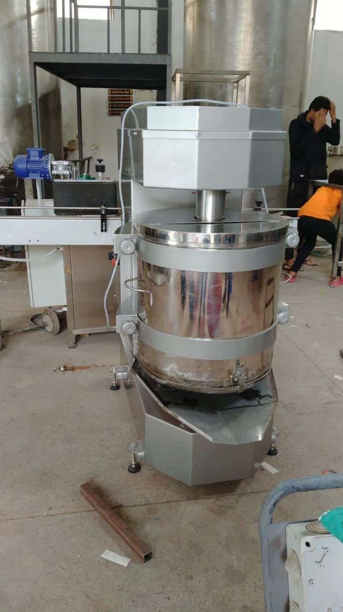
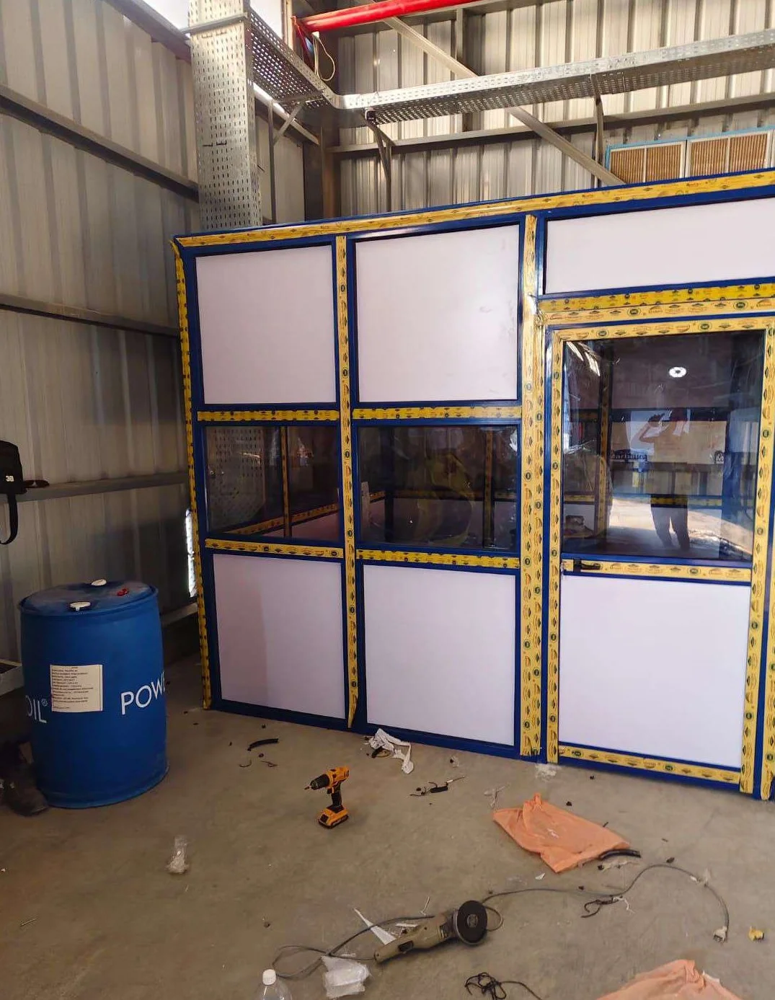

التنكات والأوعية · 8 صور
تصنيع الخزانات وأوعية التشغيل من الاستانلس ستيل
خزانات أسطوانية عملاقة، أوعية بجاكيت، تنكات متحركة بقاع مخروطي، خزانات أفقية، ووحدات مركبة داخل المصانع.
توثيق فوتوغرافي حقيقي من داخل ورش ستيل تكنولوجي ومنشآت التشغيل، مرتب حسب نوع المعدة والعمل الهندسي.
خزانات أسطوانية عملاقة، أوعية بجاكيت، تنكات متحركة بقاع مخروطي، خزانات أفقية، ووحدات مركبة داخل المصانع.

سيور ناقلة مزودة بمحركات وجيربوكس، وحدات فرز نيوماتيك، درافيل مثقبة وتروس ثقيلة.

مقاطع مواسير استانلس مصقولة بفلانشات وفتحات جانبية، وملفات أنابيب حلزونية مصنعة خارج الورشة.

منصات صعود بسلالم وحواجز، خلاطات وقلّابات أفقية، هوبرات استانلس، بوابات حديدية، وهياكل ثقيلة.

ماكينة معالجة صناعية بمحرك علوي وإمالة، وأوعية طهي وتجهيز بتشطيب مرآة فائق اللمعان.

توثيق متسلسل لمراحل تنفيذ غرفة تشغيل صناعية مغلقة: الهيكل المعدني، الزجاج، الألواح المعزولة، والباب.
الأوصاف المعروضة تصف المعدات والهياكل الظاهرة في الصور فقط. يتم تأكيد المواصفات الهندسية والسعات الدقيقة لكل مشروع عند الطلب.